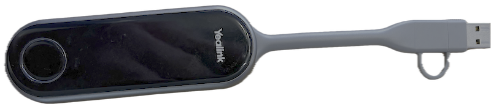

It Wynskerm
Als je met het scherm in 0.1 De Wyn wilt deelnemen aan een Teams-vergadering, nodig dan bij Locatie It Wynskerm uit. De uitnodiging wordt automatisch geaccepteerd.
Op het scherm en het bedieningspaneel is de afspraak dan automatisch zichtbaar en je hoeft dan alleen nog maar op 'Deelnemen' te klikken. Je hoeft niet met je laptop deel te nemen aan de vergadering.
Als je alleen je laptopscherm wilt delen op het grote scherm, hoef je geen Teamsvergadering aan te maken.
Scherm
Je kunt het systeem wakker maken door op het bedieningspaneeltje te tikken. Het tv-scherm gaat automatisch aan.
Uitschakelen kan met de aan/uit-knop op de afstandbediening van de tv (groene knop rechtsboven).
Dongle
Bij het scherm ligt een dongle waarmee je het scherm van je laptop kunt laten zien op het scherm (en kunt delen via Teams).
Als je deze in je laptop inplugt, kan het zijn dat je scherm direct gedeeld wordt.
Als het lichtje op de dongle langzaam groen in- en uitfade, kun je op de knop op de dongle klikken en wordt je scherm gedeeld.

Het kan zijn dat je deze melding krijgt:

Hier kun je op 'Sta toe' klikken.
Als onderstaand venster opent, kun je op 'Press to share' klikken om je scherm te delen.

Mocht deze niet automatisch starten, ga dan in de Verkenner naar de externe schijf Yealink Pod en open PresentationLauncher.
Airplay
Het tv-scherm ondersteunt ook Airplay. De tv heet SONY FW-75BZ30L